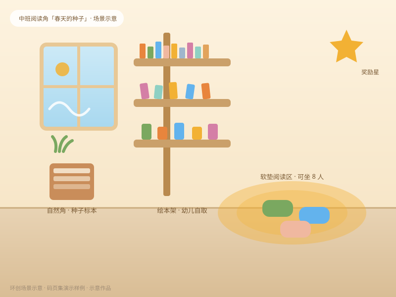
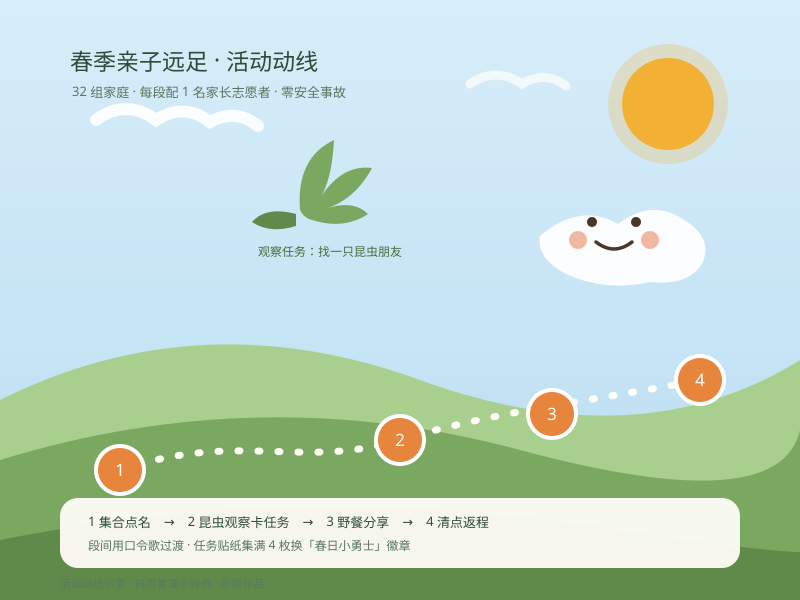

「春天的种子」阅读角环创
实习作品 · 2025.11 · 被选为园内观摩案例
- 麻绳、木夹、种子标本等低结构材料，幼儿可以自己动手补充。
- 预算控制在 80 元以内，90% 材料来自生活废旧物。
园长老师好，我是小雅——这里是我的简历
学前教育应届生，求职幼儿园教师 / 保教岗。实习里的带班经验、环创作品和特长都在这一页——手机上 3 分钟就能看完。

实习作品 · 2025.11 · 被选为园内观摩案例

实习作品 · 2025.10 · 32 组家庭参与
2025.09 — 2026.01 · 跟岗 + 独立带班
2024.03 — 2024.06 · 跟岗
五大领域活动设计与实施，独立写周计划与观察记录。
钢琴十级、儿童画与手工、幼儿律动编排，可承担六一节目编排。
临江师范学院 · 学前教育 · 2022.09 — 2026.06；师范生技能大赛一等奖（2025）。